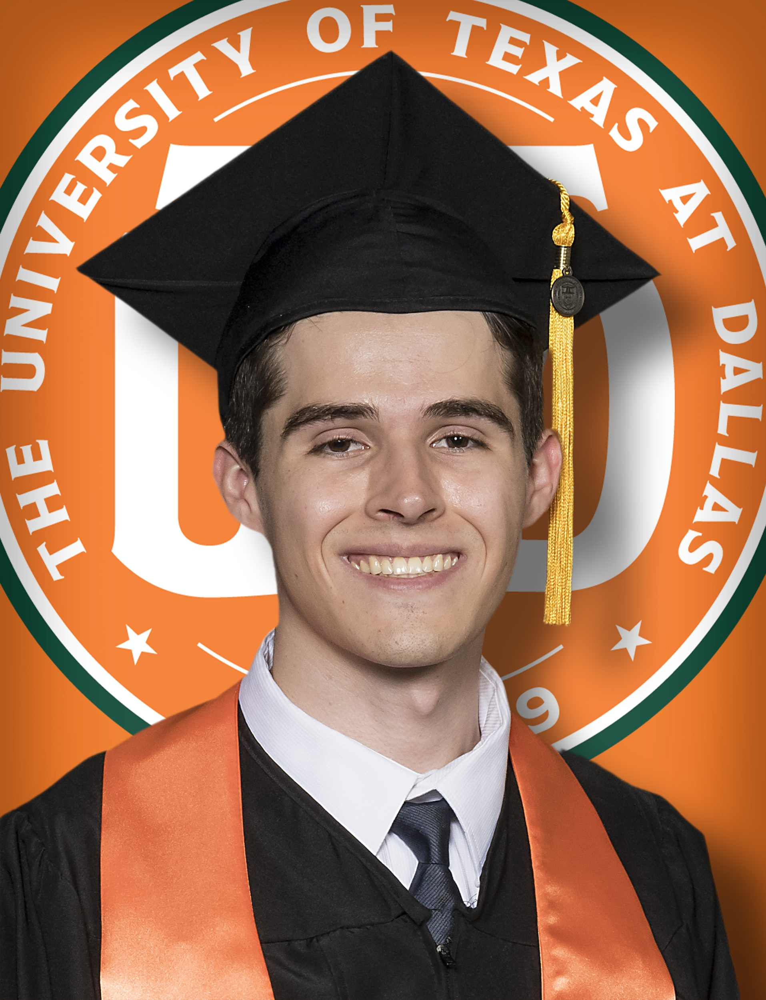

College

I'm on the cusp of graduating with a Bachelor's degree in Computer Science this December, marking the culmination my academic journey. My pursuit of knowledge began at Collin College, where I dedicated two and a half years to building a strong foundation in computer science. During my time there, I maintained an exceptional GPA of 3.8, a testament to my commitment to excellence in my studies.
The journey took an exciting turn when I transferred to the prestigious University of Texas at Dallas (UTD), further expanding my horizons in the realm of computer science. My current GPA at UTD stands at 3.674, reflecting my unwavering dedication to academic rigor. Throughout this phase of my education, I've not only excelled in the classroom but also actively participated in a range of hands-on experiences.
One of the highlights of my academic journey was an enriching internship experience, where I was able to apply my knowledge in a practical setting.
Additionally, I worked on numerous school projects and extracurricular projects that allowed me to put theory into practice, honing my problem-solving and software development skills. Many of these projects are discussed in the Projects page.
As a member of Phi Theta Kappa, I've been a part of a community that celebrates academic excellence and fosters leadership. These experiences have not only shaped me as a computer scientist but have also instilled in me a commitment to ongoing learning and growth.
As I stand on the brink of graduation, I'm excited about the opportunities that await in the field of computer science. My journey has been marked by dedication, academic achievements, and a commitment to excellence, and I'm eager to continue pushing the boundaries of what I can achieve in my future endeavors.